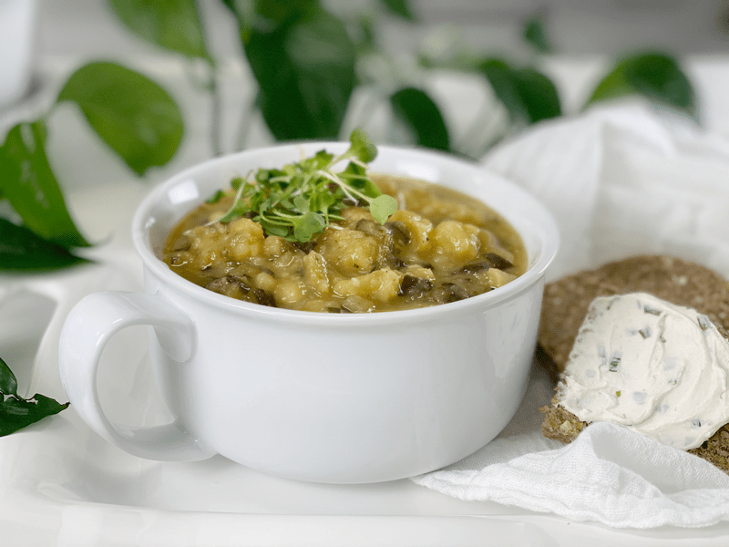
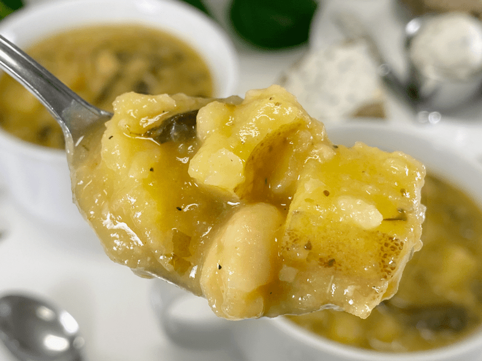
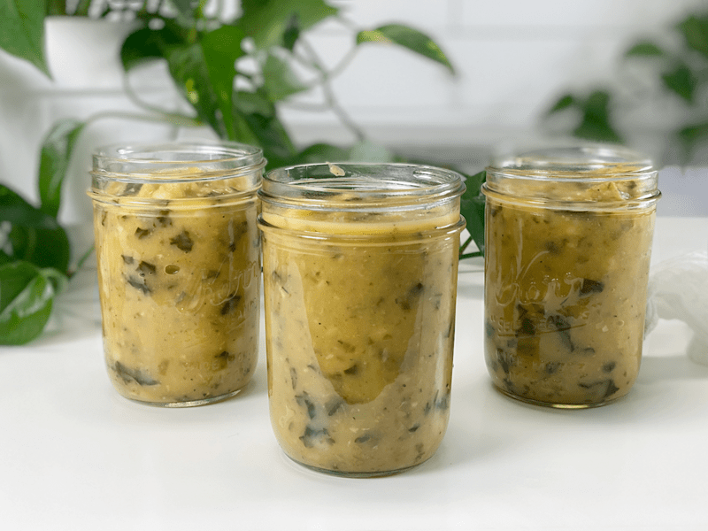

What’s not to love about a hearty bowl of soup? Soups are easy to make, easy to digest–and if done correctly, packed with nutritional value. They satiate the hungriest of appetites, and I will go so far as to say that they can restore the soul! Plus, another perk to making a large pot of soup is the leftovers! They age with a culinary grace that makes them increasingly craveworthy day after day after day.

I don’t know about you, but this COVID-19 pandemic has really been a whirlwind of emotions for me. My heart is naturally heavy with all the (possible) ripple effects that it does and can have on not only those I cherish and love but for every human being on this round ball we live on. My focus is to remain in a parasympathetic state–easier said than done, but I am giving it my best shot.
The act of creating a peaceful heart will look different for everyone. For some, it is yoga, creating a quiet space to retreat to, playing relaxing music, prayer, worship, art, dance, gardening, reading, or if you are like me…working in the kitchen. My focus has been on creating recipes based on the ingredients we readily have. In the past five weeks (as I write this), I have been to the grocery store only two times. I am not living in fear…I am just taking every precaution to keep Bob and me healthy.
One way I do that is to create delicious and nutritious comfort foods that feed the belly and saturate the soul. I have been creating and documenting recipes for over ten years now, and right now, my Studio Kitchen couldn’t be more of a sanctuary. It’s a place of calm and creativity. Do you have a space like that? If not, can you create one? Well, enough food for thought–let’s talk about this soup so you can get busy making it.

Make Every Bite Count
- If possible, add the kombu seaweed to the soup while it cooks. It will give you an extra boost of vitamins, minerals, and iodine. It doesn’t affect the flavor of the soup at all. If interested, you can read about it (here). I chopped mine up after cooking and mixed it back into the soup. It blends right in with the kale, so even the pickiest of eaters won’t detect it.
- Make sure to use organic potatoes. To learn why, and how to store them, click (here) to learn more.
- Chew your soup! Even if the texture is creamy. Sight and smell alone can start the digestive process in our bodies, but how we chew food is imperative. That goes for soups, smoothies, yogurt…anything without texture. The act of chewing releases digestive enzymes that go with our food when we swallow. Plus, it helps us slow down our eating habits…all of which aids in our digestion.
If you are looking for a soup that eats like a meal, I have a strong feeling that you will enjoy this soup. It is very filling and has a wonderful mouthfeel to it. I served Bob a bowl with a slice of Raw Caraway and Dill Bread that had a generous layer of Raw Vegan Cream Cheese and Chive Spread on it–a perfect pairing of flavors. I hope you enjoy this recipe. Please leave a comment below. blessings, amie sue
- 1 cup diced onion
- 1/2 cup diced celery stalks
- 5 cloves garlic, minced
- 3 1/2 cups veggie broth
- 8 cups diced potatoes
- 2 cups chopped kale
- 1/2 cup nutritional yeast
- 1 tsp Italian seasoning
- 1 tsp salt
- 1/4 tsp pepper
- 3″ strip kombu seaweed
Add-ins for Blending
Instant Pot Method
-
Press the “Sauté” setting and sauté the onion and celery with a few tablespoons of water until the onion is tender and translucent.
-
Add in the garlic, and sauté for another minute.
- Don’t overcook or burn the garlic or it will turn bitter.
-
Add the vegetable broth, potatoes, kale, nutritional yeast, Italian seasoning, salt, pepper, and kombu seaweed. Stir together.
-
Secure the lid and make sure the pressure valve is switched to “Sealing.”
-
Press the “Manual” setting, adjust the time to 5 minutes on high pressure—good time to clean up the dirty dishes.
-
Allow the pressure to release naturally.
-
Add the cooked white beans (juice too, if using canned) let it sit for about 10 minutes, and enjoy!
- Since the beans are already cooked, they are added at the tail end, so they don’t disintegrate.
Stovetop Method
- In a large stockpot, sauté the onion and celery with a few tablespoons of water until the onion is tender and translucent.
- If you see browning on the base of the pot, use a little bit of the premeasured vegetable broth to deglaze it. Deglazing helps to remove any food particles stuck to the pan; plus it adds a richness to the soup base.
- Add in the garlic, and sauté for another minute.
- Don’t overcook or burn the garlic or it will turn bitter.
- Add the vegetable broth, potatoes, kale, nutritional yeast, Italian seasoning, salt, pepper, and kombu seaweed. Stir together.
- Bring the soup to a gentle boil, then reduce the heat to medium-low and cook for 15 to 20 minutes, or until the potatoes are tender.
- Add the cooked white beans (juice too, if using canned), let it sit for about 10 minutes, and enjoy!
- Since the beans are already cooked, they are added at the tail end, so they don’t disintegrate.
Food Storage
When it comes to storing hot foods, we have a 2-hour window. You don’t want to put piping hot foods directly into the refrigerator. However, If you leave food out to cool and forget about it, you should, after 2 hours, throw it away to prevent the growth of bacteria. (source) Large amounts should be divided into smaller portions and put in shallow covered containers for quicker cooling in a refrigerator that is set to 40 degrees (F) or below.
- Fridge – In a sealed container, it will keep for up to 5-7 days.
- Freezer – You can also freeze the soup in individual or meal-sized portions for up to 3 months.
-

-
I like to freeze 2-3 jars of soup every time I make it. Make sure that you use freezer-safe jars and leave 1″ of head space since it expands a little as it freezes. Label, date, and freeze for up to 3 months.